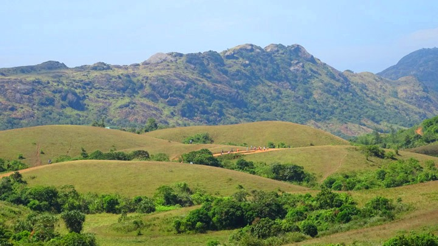
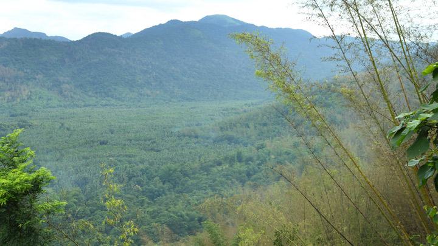
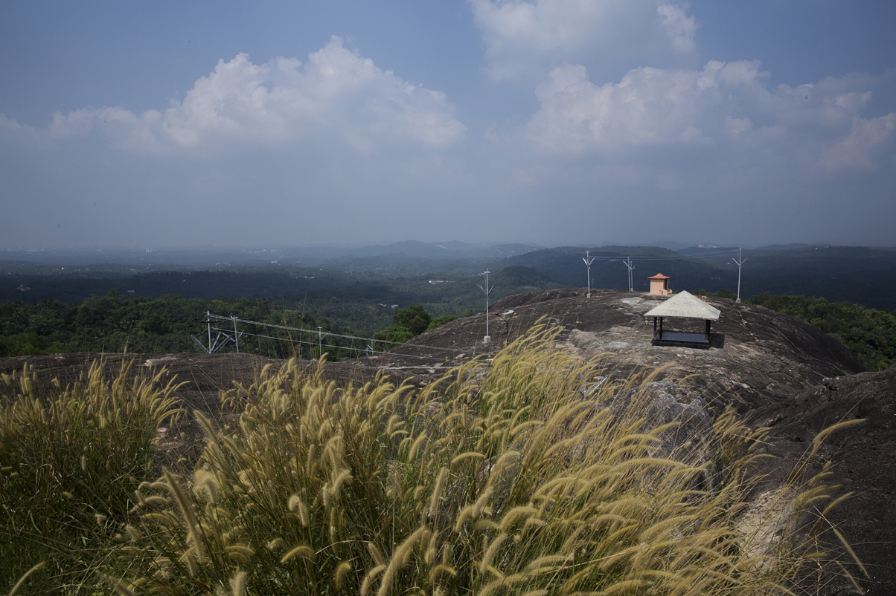

Top 5 places to visit in Kottayam
Kottathavalam
One of the most loved picnic spots in Kottayam, Kottathavalam is a place of archaeological interest at the legends says that the Royal Family of Madurai would ascend a rock cut path to take rest in this ancient cave.
A magnificent cave which can be reached by the rock cut steps near the Muruganmala is perfectly interspersed with a naturally green cover that spreads out in all directions. Inside it, people can look at chair shaped carvings, along with depictions of famous legends including Madurai Meenakshi, Ayyappa, Murugan and Kannaki.
This elevated path is every picnicker’s dream; quaint, secluded and peaceful, with the very birds and animals around you acting as joyful compatriots.

Kumarakom Bird Sanctuary
Kumarakom Bird Sanctuary is among the most popular bird watching spots in the country. Spread out over 14 hectares, one comes across numerous rare avian species in these parts. Located on the banks of the Vembanad Lake in Kottayam, one gets to see a variety of migratory birds that flock in thousands, ranging from places like the Himalayas to Siberia.
People who visit in June and August are treated to many rare sights. This is the breeding season of the resident wetland birds such as Indian Darter, Little Cormorant, different species of egrets and herons, White Ibis and several species of kingfishers. People also get to see the waterfowl, cuckoo, owl, water duck, Siberian Cranes, parrots, teal, larks, flycatchers and wood beetles. Boating trips around the sanctuary is extremely relaxing and this is among the most visited places in Kottayam district.

Nadukani Viewpoint
Perched atop Nadukani, the mountains and the rivers seem like ancient beings, lying in deep slumber with a host of greenery on all sides as spectators. The bird’s eye view from this hill station in Kottayam is sought out annually by people numbering into the thousands. Nobody wishes to miss out on the panoramic view of mountain ranges on one side and that of the River Muvattupuzha on the other. Gigantic rocks are your companions, over 3000 ft. above sea level, and it is a visual worth embracing at least once in your lifetime.

Illikal Kallu
One of the most sought after destinations in Kottayam is the Illickal Kallu, a majestic hill which has a part of its peak shorn off. This steep rock on the top of the hill, known as the Illickal Kallu, or the boulder at Illickal is easily one of the most prominent sights from any part of Kottayam. The journey here is in itself an eventful one. After a thrilling drive negotiating hairpin curves and a hike uphill, there is path which feathers out to Illickal Kallu. You may tread this path or just stay put and feel the might of this imposing muscular rock. The breathtaking aerial view of the surroundings and billows of mists that glide past shrouding the towering hill is one magnificent sight.

Marmala Waterfalls
Located in Teekoy village, enroute Vagamon Hill Station, Marmala Waterfalls, call you for an adventurous walk through the rocky terrain amidst the scenic village. It's a year-round destination but the best time to visit Marmala Falls is during early monsoon. That's when you can view Marmala Waterfalls in all its glory and splendour. The waterfall is a part of Vazhikkadavu River, which is a tributary of the Meenachil River.